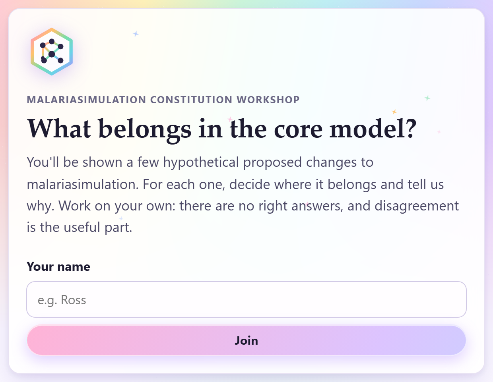
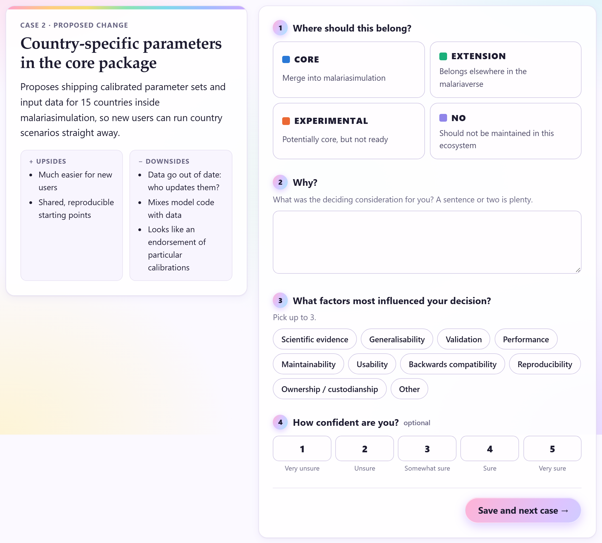
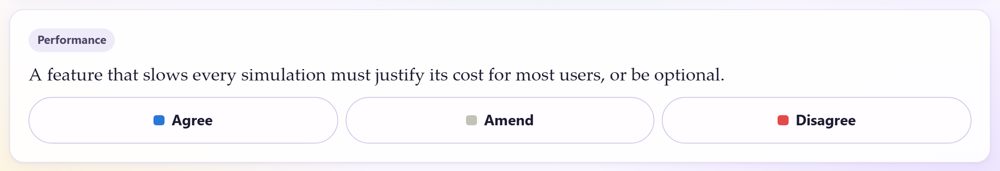

malariasimulation constitution workshop
You need a laptop (or tablet) with a web browser. No account, no password, nothing to install.
Open the link on your laptop. It's also on the big screen.
Join the video call, then open the link in your web browser. It's also in the call chat. Put the call and the workshop side by side.
The big screen shows the same plan, plus two short steps for the facilitator: Tidy and Finish.
Open the link, type your name and click Join
You'll get your cases straight away.

About 15 minutes, on your own.
Each case is a made-up change to malariasimulation. For each one:
There are no right answers, and disagreement is useful.

About 30 minutes, together.
Everyone's answers go up on the screen, without names, and we talk through the cases where people disagreed most. Thought of a rule? Add it on the Principles tab, under Propose a principle.
About 20 minutes.
When voting opens you'll see Vote now →. For each principle, click one:
You can change your vote while voting is open.
